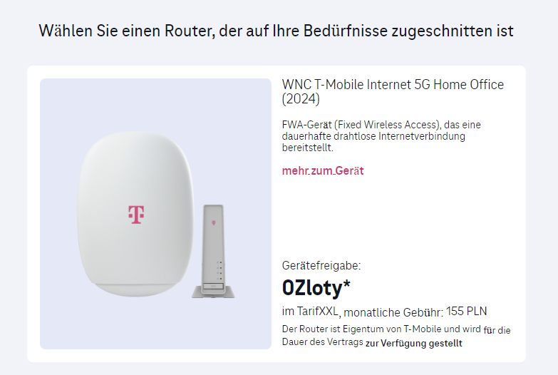
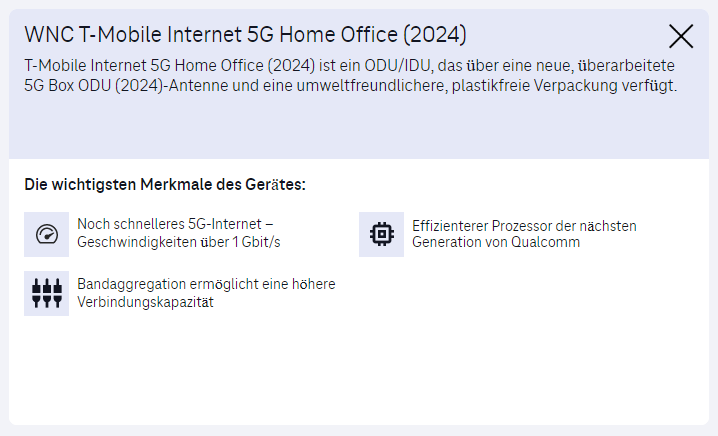

Frage wo oder wann gibt es die af62 odu hier hat sie einer schon ?
Bearbeitet von Klaximaxi43
Also seit 28.3-30.3 gelistet in Vietnam
81.LAF621.G13#&Sd wifi transmitter function router for digital wired ht,Model: AF62,N/H: T-Mobile,D/A: 56V-0.275A/15.4W,1 SET includes Router and accompanying accessories like HYS. 100% New#&KXD
https://www.volza.com/p/digitizer/import/import-in-vietnam/hsn-code-85176243/
https://www.volza.com/p/digitizer/import/hsn-code-85176243/bill-of-lading-56129-0-202247383/
Kommt die auch zu uns ?
Mfg
Bearbeitet von Klaximaxi43Also wo bekommt man den T-Mobile weiß von nix habe gefragt
Und es ist fix ein af62 siehe vom User das Bild
Hallo @Klaximaxi43 , es könnte sich hier um den Outdoor Router handeln:
https://www.magenta.at/hilfe-service/services/hardwaresupport/device/internet-5g/box-outdoor
https://www.magenta.at/internet/5g-box-outdoor
LG Karo
Am 20.8.2024 um 11:09 schrieb Karo:Hallo @Klaximaxi43 , es könnte sich hier um den Outdoor Router handeln:
https://www.magenta.at/hilfe-service/services/hardwaresupport/device/internet-5g/box-outdoor
https://www.magenta.at/internet/5g-box-outdoor
LG Karo
Hey ja das schon habe den auch bzw mein Sohn und Bruder und schon paar gefragt aber alle haben wir den af55
Also af62 hat nur der eine User momentan
Bzw was ist da neu und warum schaut er gleich aus wie der af55 der af62 alles gleich bis auf innen was anderst aber was
Ja Bluetooth Modem etc aber was noch
Boa, da bin ich technisch überfragt.
Ich empfehle dir mal unter 0676 200 7777 nachzufragen.
Falls du bei dir in der Nähe einen Magenta Shop ( https://www.magenta.at/shopfinder/ ) hast, kommt gerne vorbei.
Vielleicht ist der Router dort ausgestellt und du kannst ihn dir genau anschauen und mit deinem jetzigen Gerät vergleichen. LG Karo
Bei T-Mobile Polen dürfte es bereits eine neue Version des Outdoor-Routers geben:
https://www.t-mobile.pl/c/oferta-specjalna/internet-tmobile?oferta=lte&miejsce=dom&klient=nowy


Jepp den habe ich auch schon gesehen dachte mir aber nix dabei (2024) mmh
Polen Forum hat auch noch keiner nur der bei uns der User 😀
Also doch eher ein x62 oder x65 dann qualcom eher x62 darum af62
Af55 hat ja den x55
Umwelt freundlich und 1gb/s und 2x ca SA dann
Uff will ihm haben 😉 😄
Bearbeitet von Klaximaxi43N75 wird er auch haben
Aber jetzt kommt die Frage ob echt holen oder doch den af55 lassen weil x62 wäre trotzdem ein Rück Schritt zum x55
Luxus x55 x65
Abgespeckt x62
Aber neu ist neu
Naja bis er da ist vergehen sicher noch paar Monate bzw bis ihn wer hergibt
Suchen tu ich ja bereits seit gestern
Mal sehen 😜
Nö kein n75
https://www.globalcertificationforum.org/pub_product/11850.html
Aber mehr 5g Bänder halt und mehr mhz bei n28
https://www.globalcertificationforum.org/pub_product/10043.html
Gegen af55
Mfg
Bearbeitet von Klaximaxi43Wie immer Support braucht man nie fragen für was gibt es einen Support oder Hotlines
Keiner eine Ahnung und ich soll mit Rollator dort hin fahren für 1 Frage
FRECHHEIT T-MOBILE
Zitat Support
vielen Dank für Ihre Nachricht.
Bitte besuchen Sie wegen dieses Anliegens die Shops:
Wagramer Strasse 94, 1220 Wien
oder
Favoritenstraße 116, 1100 Wien
Also zum x55 auf x62 wären 2x Rückschritte und 1x vorwärts wegen n75 mit ca (5g) aber Rest 2x rück Schritte
Also lieber beim x55 bleiben oder gleich einen x65 dann Mal kaufen
Aber x55 ist noch immer der beste irgendwie
Habe ja schon viele durch von A - Z 😀 und der wnc mit x55 ist mein bester Router was ich hatte ehrlich gesagt
Bis jetzt keinen einzigen Tag ein Problem damit gehabt und läuft 24/7 wie am Schnürchen ohne ab Brüche oder sonstiges
Mein Bruder mein Sohn und ich echt hoch zufrieden damit
Also besser beim x55 wnc bleiben statt den x62 wnc
Mfg
Bearbeitet von Klaximaxi43Übrigens die X62 Version gibt es mittlerweile auch bei Magenta als Magenta 5G Box Outdoor 2.0:
https://shop.magenta.at/product/router/magenta-5g-box-outdoor-20-5906
Jepp schon bemerkt aber e hinfällig mit x62 und ohne n75 da ist die mit x55 af55 e besser
X62 ist eher 2 rück Schritte
Am 20.8.2024 um 09:55 schrieb Klaximaxi43:
Ich mal wieder nach langen wieder so komisch warum haben manche hinten af62 stehen und manche Outdoor 2.0 siehe Bild
Aber habe nach wie vor die af55 wegen x55 Modem da das x62 einfach nix taugt
Bleibt gesund
Mfg
Bei uns ist eine Goldene Schachtel die 2.0 und in Polen so Bild
Aber bin nach wie vor bei der af55 mit sdx55 und noch immer meinen Speedport smart 4 dazu statt der original idu wegen 4x4 Mimo alleine ! Mfg
{kind=link}
{kind=link}
{kind=link}
{kind=link}
{kind=link}
{kind=link}